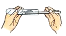
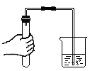

2019年北京市中考化学真题 · 选择题 第1、2、3、4、5题
1. 空气成分中，体积分数最大的是（ ）
A. 氮气B. 二氧化碳C. 氧气D. 稀有气体
2. 下列属于非金属元素的是（ ）
A. MgB. ZnC. ClD. Ag
3. 生活中一些食物的近似pH如下，其中显碱性的食物是( )
A. 柠檬汁(2.0～3.0)B. 苹果汁(2.9～3.3)
C. 牛奶(6.3～6.6)D. 鸡蛋清(7.6～8.0)
4. 下列物质在氧气中燃烧，火星四射、生成黑色固体的是（ ）
A. 铁丝B. 红磷C. 甲烷D. 氢气
5. 下列操作不正确的是（ ）
A.  加热液体B.
加热液体B.  稀释浓硫酸
稀释浓硫酸
C.

取固体粉末D. 
检查气密性